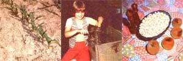

"Why buy popcorn," asks Susan Christiansen Feldhake, "when you can grow fresher, tastier, healthier poppin' kernels in your own backyard or homestead garden?"
It'd take a heap of lookin' to find anybody who doesn't like popcorn (which carries the imposing scientific title, Zea mays everta). Whether it's served as a quick snack for drop-in guests, an evening family munch, or a low-cost substitute for missed college dorm meals, a freshly popped pan of corn is a treat that nearly everyone enjoys.
And, although most store-bought popcorn is produced in the Corn Belt states of Iowa and Nebraska, one variety or another of this delicious snack will grow in any climate that'll support sweet corn. Homegrown popcorn has a lot of advantages over the commercial brands, too. It'll pop and taste better, for instance, because it's fresh ... and it won't be contaminated with any sprayed "surprises" (which can be comforting knowledge in these days of chemical farming).
Homegrown popcorn does have one drawback, though: Once you've eaten it you'll never again be satisfied with the store-bought product. You'll just have to plant your own plot of corn every year!
Fortunately, changes in available garden space needn't interfere with continued popcorn production, because the grain can be planted most anywhere. For example, a friend of mine grows her corn in among the flowers on the south side of her house ... and I know another gardener who planted popcorn in his cucumber hills. He was able to pick the ears and leave the row of stalks to serve as a natural trellis for the cukes.
It can be difficult to find fertile popcorn seeds, however. If you have a favorite commercial brand, be sure to try a germination test before you go to the trouble and expense of a full planting: Sow a row of about 20 seeds, water it, and wait. If most of the corn is up and growin' in a week, you have good seeds. If two weeks pass with little or no growth, though, you'd better look for another source. (Many popcorn producers heat-dry the kernels to kill weevil eggs, and this process sometimes hinders germination. :Besides, some retail popcorn is just too danged old to grow!)
If you can't locate any fertile commercial popcorn-and don't know any growers who might be willing to donate (or swap something for) seeds-you can always buy from a seed company. In states that grow a lot of corn, just contact the farmers who serve as local seed-corn agents. These people often sell popcorn as well as sweet and field corn, and will sometimes even give out free packets of this seed in order to promote their other brands.
Popcorn varieties are available in a range of colors that includes off-white, light gold, deep gold, deep maroon, and black. There are also "calico" varieties, which have two or more colors on each ear. All of these corns have their own distinct tastes and "popped" appearances ... so get a trade arrangement going with your gardener friends: There's bound to be one type of popcorn that's just right for you.
Look for mail-order seeds in the Mother Earth News Seed and Plant Finder.
Once you've located fertile seeds, plant them exactly as you would sweet corn. (Soak the kernels for 12 hours before planting, then set them 1 to 1-1/2 inches deep and 8 to 10 inches apart.) Keep the patch weed-free, and-when the stalks are knee-high-heap up soil around the exposed roots to give the plants additional support ... they'll shoot up like magic.
After 85 to 120 days (the time varies from species to species), the popcorn will be mature ... and you'll have to decide whether to use your oven or the sun to dry the kernels.
In areas where the autumn is relatively free from rain, corn can simply be dried on the stalks after it ripens. A "pop test" will let you know when the process is complete. Just cook a few kernels as you normally would ... if the corn pops poorly and sticks to the pan, you'll know it needs to "sun" for a while longer.
I have a neighbor who husks his ears of popcorn and then dries them in a wheelbarrow. He just pushes the load out into the sunshine on warm days, and shifts the ears around often to assure even drying.
Popcorn stored on the ears takes up a lot more space, however, than do loose kernels. I've found that the quickest way to process a good harvest is to husk and shell the ears after they've stalk-dried for two months and then-setting aside some seed for next year's crop-oven-dry the kernels to perfection. (Hand-shelling, it's true, is a slow and often painful process ... but you can still find small, old-timey corn shellers at farm auctions and such for around $5.00. Or, if you have a large "modern" sheller-and a lot of popcorn-it might be worth your while to get out the tractor and pulleys to do the job.)
To oven-dry your shelled popcorn, just preheat the stove to 300°F and put a large pan (a turkey roaster will do) of kernels on the rack. Then, turn the oven down to its lowest setting immediately, and dry the corn-stirring it occasionally-for five hours. After that time you can turn the heat off and leave the kernels in the oven to cool overnight. They'll be "poppin' perfect" by morning.
(It is possible to dry corn too thoroughly, though. I forgot to turn my preheated oven down, once, and returned a little later to a house that smelled suspiciously like cooked corn. The kernels were so dry that they wouldn't pop at all! But, I just sprinkled the popcorn with a little water, put it in a tight-lidded bucket, and left the closed container in the fridge for a week. The remoistened corn popped just fine.)
No matter how carefully you husk and shell your corn, a few crinkled silks-as well as some chaff and cob residue-will get mixed in with the kernels. This refuse can cause the popped corn to scorch, so it's best to clean each batch before you store it. All you have to do is pour the popcorn, slowly, from one bucket to another ... and let the wind (or an electric fan) carry away the debris.
Once your corn is shelled, dried, and cleaned, it's ready to store. Kernels that haven't been oven-dried should be kept in a freezer ... since they might harbor insect eggs which could hatch if left at room temperature. Heat-dried corn, on the other hand, will store well in a sealed jar on the shelf. (Corn seems to pop better when it's chilled, though, so I always keep some in a container in my refrigerator ... ready to be poured right into the pan.)
Most any kind of cooking oil or shortening-even bacon grease-is fine for poppin' corn. Some of these enhance the flavor of the popcorn, too, so experiment until you find the oil that best suits your palate.
And, while there's nothing wrong with plain salted popcorn, you can add different toppings to turn your corn into something special. Dribble some molasses on the popped kernels, for instance, or stir a little honey into a bowl of hot, buttered corn. Brown sugar and butter-melted together and mixed into a container of popcorn-will produce a delicious homemade caramel corn ... and most cookbooks contain recipes for popcorn balls and similar goodies.
These treats will please your family, of course, and will also make great gifts to say "thank you" for the kind of everyday favors that good neighbors do for each other. You can send gaily decorated jars of unpopped kernels to your "city cousins" for Christmas or birthdays, too, and be sure that the present will be enjoyed for a long time to come.
And, best of all, many folks will gladly pay much more than the supermarket price for fresh, locally grown popcorn. So work up that weedy patch on your farmstead (or in your yard), put in a few rows, and get ready to earn some extra cash. Don't worry about expensive packaging, either ... small plastic bags of popcorn, closed with twist-ties, seem to sell as rapidly as do kernels packed in fancy labeled jars. (Do be sure to heat-dry any corn that you plan to market, however ... customers who suddenly find their shelves weevil-ridden won't be eager to buy from you again!)
It's also a good idea to offer whole dried ears of popcorn for sale (especially if you grow one of the colorful varieties). Lots of people will buy these to use as seasonal decorations ... and shell the cobs for poppin' later.
But, whether you raise popcorn for yourself, to give as gifts, or to bring in needed money, you can rest assured that you'll enjoy the whole experience ... from plot to pan.
|
 PHOTOS BY ROBERT E. LEE. JR Homemade popcorn is superior to anything you can find in the grocery store. Learn to grow the right varieties of popcorn corn for a delicious and healthy treat. |
|
|